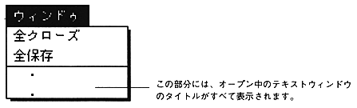
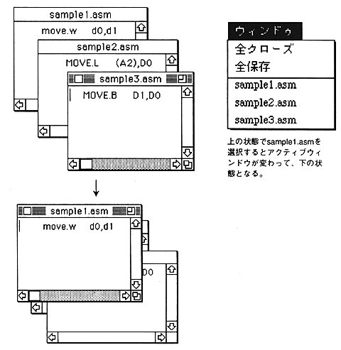

Return to previous page ｜ Return to menu ｜ Go to next page
-
Window menu
- The “Window” menu provides commands to close all open text windows and to switch between text windows.

-
All closed
- Closes all currently open text windows.
The window will be closed automatically (however, if there are changes, a confirmation dialog will appear as well as "Close").
-
Save all
- Saves all currently open text windows and closes them.
The window will close automatically.
-
Switch text window
- All text window titles currently open are displayed in the menu. The window selected from these becomes active.

Return to previous page ｜ Return to menu ｜ Go to next page